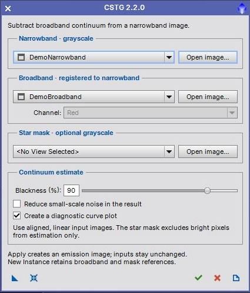
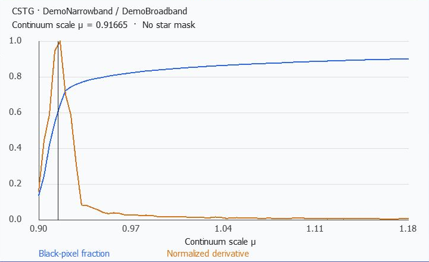

Estimate and subtract broadband continuum from a narrowband image. User guide for version 2.2.0. [more]
Keywords: continuum subtraction, narrowband, broadband, emission, TGScripts
[hide]
[hide]
CSTG estimates a continuum subtraction factor by sampling how many pixels become black as increasingly more broadband signal is subtracted. It fits the peak of the curve's first derivative and creates a separate emission image. The original estimation method and sampling step are retained in a compact TGScripts interface.
Requires PixInsight 1.9.5 or later. Open src/scripts/TGScripts/CSTG.js with Script > Execute Script File to use the repository version. You may open the script before loading any images.
[hide]

Screenshots show the running PixInsight interface with synthetic demonstration inputs. Close the dialog to inspect image windows normally.
[hide]
Use calibrated, registered, linear images with compatible background correction. The script checks dimensions, but cannot determine whether stars and structures are actually aligned. The narrowband image must be grayscale. Narrowband, broadband and star mask must be separate images.
The selected broadband channel is copied and multiplied by the ratio of narrowband mean to broadband mean, with values clipped to the normalized range. The reported continuum scale applies to this mean-matched copy, not directly to the original broadband image. Existing image masks and image selections do not restrict the operation. Source pixels and selections remain unchanged.
[hide]
Blackness
Range 50 to 99 percent, default 90. Controls how far the black-pixel curve is sampled. It is not the desired blackness of the final emission image. If the derivative peak is too close to the sampled edge, a higher limit can help.
Star mask
Mask pixels above the mask's mean are excluded from estimation. Excluded pixels count toward the blackness threshold, as in the original method. The mask does not mask the final subtraction, which covers the full image.
Noise reduction
Applies the original first-wavelet-layer noise reduction to the emission image after subtraction. It does not change the estimated continuum scale.
Diagnostic plot
Creates a separate RGB plot directly in PixInsight. No external plotting executable is required. Blue shows the black-pixel fraction; orange shows the derivative normalized to its peak; the vertical line marks the fitted scale.
The scale is sampled in steps of 0.004, retaining version 2.1's sampling behavior. A finite search limit prevents unbounded processing on unsuitable data. Close requests cancellation while estimating; the request takes effect at the next processing checkpoint. Temporary images are removed when estimation is cancelled or fails.
[hide]

This plot was generated from the synthetic narrowband and broadband pair used in the interface screenshot. The selected scale is near the first derivative peak. Its numerical value is specific to these inputs.
The output is a 32-bit floating-point grayscale image formed by subtracting the fitted fraction of the mean-matched broadband channel from the narrowband image. Values are clipped to 0 to 1. An STF is applied for inspection without stretching the pixels. The source FITS keywords are retained and an EMISSION keyword is added.
Inspect residual stars, the background and faint structures before using the result. A numerical solution does not guarantee that the inputs are physically well matched. Incorrect registration, different background offsets, filter mismatch or strong continuum-color differences can leave artifacts.
[hide]
A missing solution can mean there are too few useful curve points, a degenerate fitted peak, or that the requested blackness cannot be reached because too many broadband samples are zero. Check alignment and backgrounds, reconsider the mask, and try a higher blackness limit. Both images need positive mean intensities. A new result is created only after successful estimation; inputs are never overwritten.
[hide]
New Instance stores settings and the selected broadband and optional mask identifiers. It does not save a new narrowband binding: when dragged onto a grayscale main image, that receiving image becomes the narrowband input. Ensure the saved reference images still exist and match it. Opening the instance globally lets you review or change all selections. Legacy saved narrowband identifiers are read when present.
Reset restores settings while retaining the input images. Apply runs again without closing the dialog. Close closes the dialog while idle or requests cancellation during processing. Documentation opens this guide.
[hide]
Compact 420-pixel interface, open-first input selection, repeatable Apply, safe cancellation and local PiDoc help. Native curve plotting replaces the external plotting dependency. Invalid inputs and degenerate fits produce clear errors, while temporary images are cleaned up.
Based on Continuum Subtraction by Hartmut V. Bornemann, adapted for TGScripts by Thorsten Glebe. Distributed under the GNU General Public License, version 3 or later; see the script source for the license notice.
Copyright © 2017-2019 Hartmut V. Bornemann; 2022-2026 Thorsten Glebe